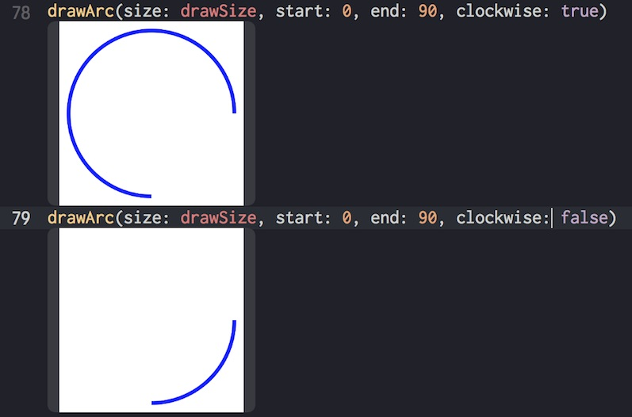

- Tue 24 October 2017
- development
- mani3
- #swift
準備
- Xcode 9.0.1
円を書く
こちらを見て、指定する startAngle と endAngle は右回りと理解した。
extension CGFloat {
var rad: CGFloat {
return self * CGFloat.pi / 180
}
}
func drawArc(size: CGSize, start: CGFloat, end: CGFloat, clockwise: Bool = false, scale: CGFloat = UIScreen.main.scale) -> UIImage {
UIGraphicsBeginImageContextWithOptions(size, false, scale)
let context: CGContext = UIGraphicsGetCurrentContext()!
context.setStrokeColor(UIColor.blue.cgColor)
context.setFillColor(UIColor.white.cgColor)
context.setLineWidth(4)
let rect = CGRect(x: 0, y: 0, width: size.width, height: size.height)
context.fill(rect)
let r: CGFloat = rect.midX - 10
let c = CGPoint(x: rect.midX, y: rect.midY)
context.addArc(center: c, radius: r, startAngle: CGFloat(start).rad, endAngle: CGFloat(end).rad, clockwise: clockwise)
context.strokePath()
let image: UIImage = UIGraphicsGetImageFromCurrentImageContext()!
UIGraphicsEndImageContext()
return image
}
clockwise
clockwise を変更して比較してみる
let drawSize = CGSize(width: 200, height: 200)
drawArc(size: drawSize, start: 0, end: 90, clockwise: true)
drawArc(size: drawSize, start: 0, end: 90, clockwise: false)

なんか反対のような気がするが、こういうものだと理解しよう。。
あと開始は右から時計回りに 0, π/2, π, 3π/2, 2π... という感じだった。